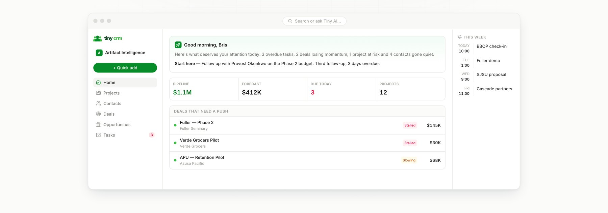
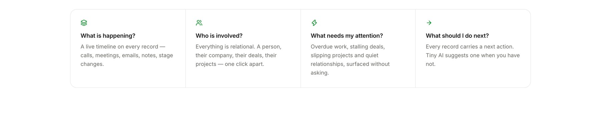
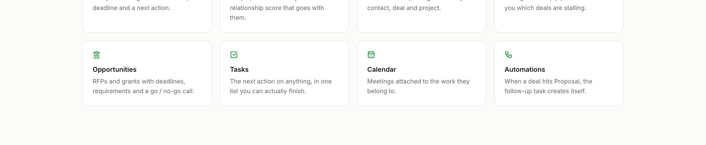
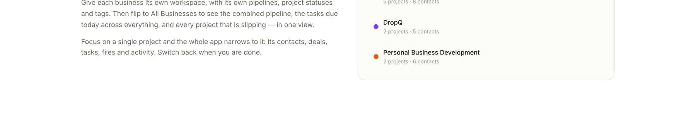
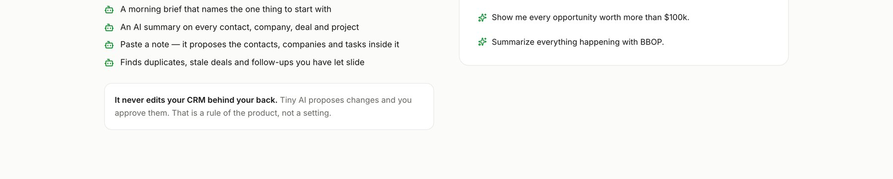
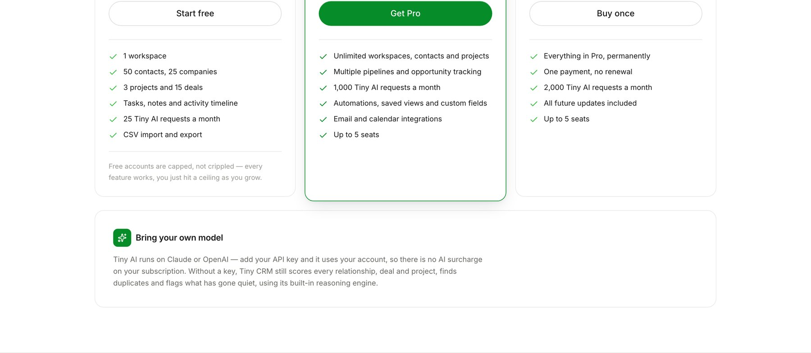

Tiny CRM
Your whole business. Organized.

Overview
Most CRMs are built for a sales department. This one is built for the person running several businesses at once: contacts, deals, projects and tasks on one relational spine, with an assistant that has actually read it. I designed and built it end to end.
The premise
Four questions, answered on every screen.
Most CRMs make you assemble the answer yourself. Every record here resolves the same four questions before you have to ask them.

Structure
Everything has a home, a relationship, and a next action.
Eight modules on one relational spine: a contact belongs to a company, a deal belongs to a project, and nothing floats loose.

Multi-business
Switch context without losing the whole picture.
A separate workspace per business, and an aggregated view across all of them. Built for the reality of running more than one thing at once.

The assistant
An assistant that has actually read your CRM.
Morning briefs, duplicate detection, summarisation and answers over your own records. It proposes rather than executes. The point is judgement, not automation for its own sake.

The model
Priced like a tool, not a platform.
Free at the bottom, fourteen dollars a month in the middle, and a lifetime option, because a tool you run your own business on should not be rented forever.

Outcome
Built for the person who is the sales department, the delivery team and operations at the same time.
Try Tiny CRM ↗Next project
DropQ
Timed product releases with inventory that cannot oversell.